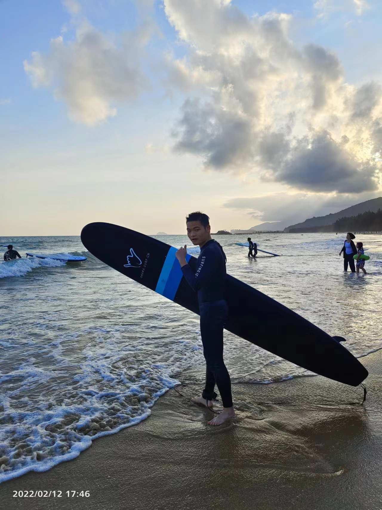
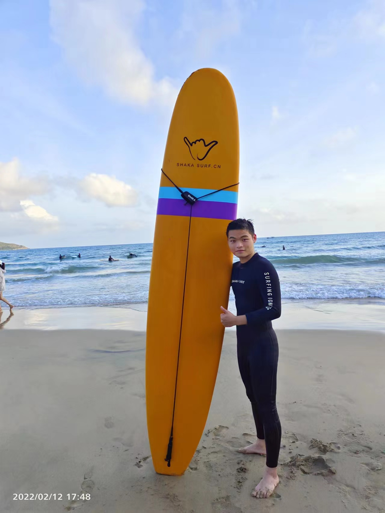

Sport:
Surfing and paddleboarding are two of my favorite water sports. There's something truly exhilarating about being
out on the ocean, catching waves,
and feeling the rush of adrenaline as you ride them to shore.
But more than that, there's a sense of peace and tranquility
that comes from being surrounded by the vast expanse of the sea.
For me, surfing and paddleboarding are a form of meditation. There's no room for distractions when you're out
there in the waves,
just you and the water. The sound of the waves crashing, the feel of the sun on your skin,
and the rhythm of your breathing as you paddle or catch a wave - all of these things help to quiet the mind and
bring a sense of calm.



Music:
I enjoy playing guitar and music.Perhaps what I love most about playing guitar is the sense of community that comes
with it.
Whether you're jamming with friends or strangers, there's a shared respect for the power of music and a bond that
forms through the experience.
It's a reminder that no matter how different we may seem on the surface, we're all connected by our love for playing
music.
I am the vocal and guitar in the band Rubbur Soul, which formed by me and friend. When I am
free I enjoy playing music and singing song. Most of them are pop songs. I just upload a piece of recorded singing
audio below,
hope you like it!
Courses:
As a student majoring in artificial intelligence, I take the following courses:
Web development Design/ Principles and Practice of Database Systems / Operating Systems Principles/ Introduction to Software Engineering/ Object-Oriented Programming...
Web development Design/ Principles and Practice of Database Systems / Operating Systems Principles/ Introduction to Software Engineering/ Object-Oriented Programming...